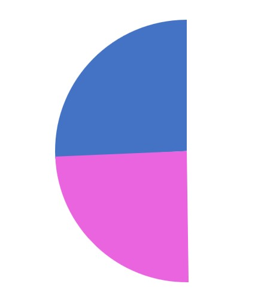
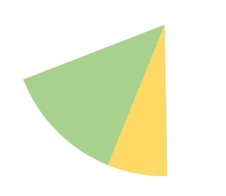

Of those experiencing homelessness in 2021:
-> 55.9% were male, an increase of 1.6% from 2016
-> 44.1% were female, an increase of 10.1% from 2016.

Young people have the highest rates of homelessness:
-> Nearly a quarter (23.0%) of all people experiencing homelessness were aged from 12 to 24 years (in green)
-> 14.4% (in yellow) were aged under 12 years

However, even these numbers are somewhat arbitrary, because when you really think about it...
what really defines homelessness?